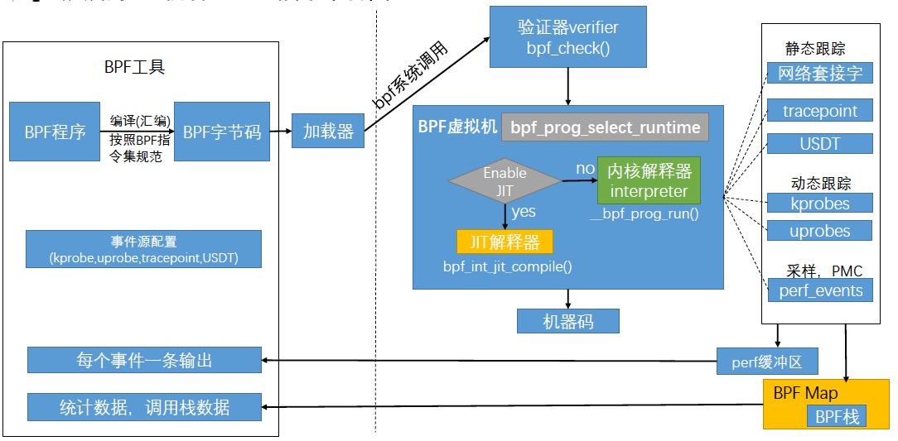
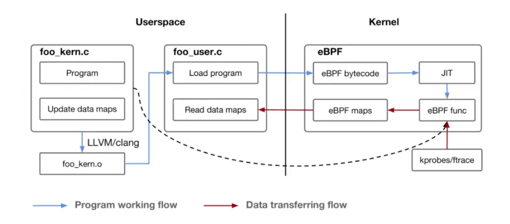
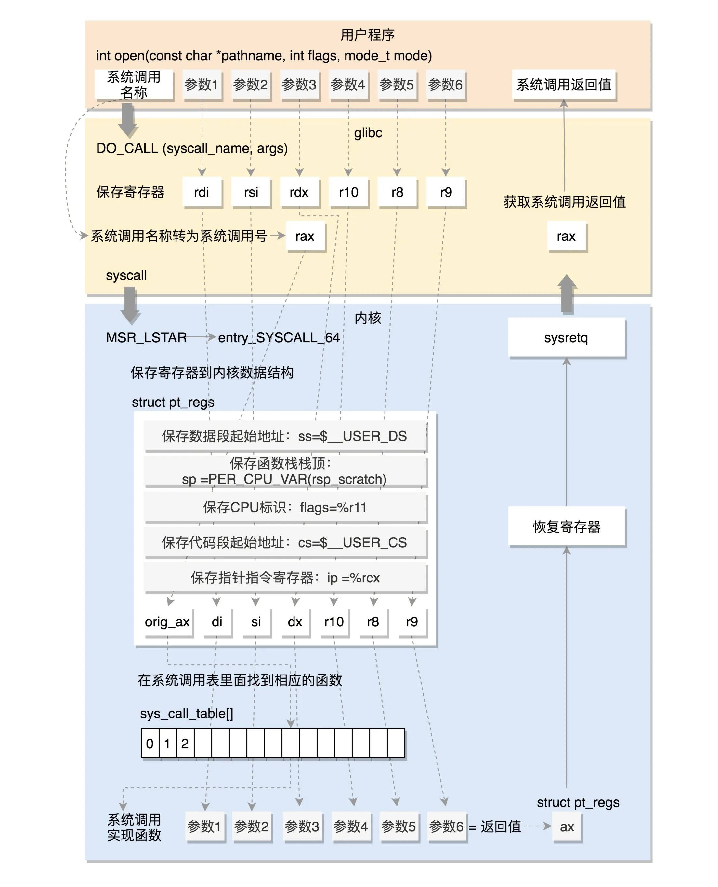

介绍
BPF（Berkeley Packet Filter ），中文翻译为伯克利包过滤器，是类 Unix 系统上数据链路层的一种原始接口，提供原始链路层封包的收发。1992 年，Steven McCanne 和 Van Jacobson 写了一篇名为《BSD数据包过滤：一种新的用户级包捕获架构》的论文。在文中，作者描述了他们如何在 Unix 内核实现网络数据包过滤，这种新的技术比当时最先进的数据包过滤技术快 20 倍。BPF 在数据包过滤上引入了两大革新：
一个新的虚拟机 (VM) 设计，可以有效地工作在基于寄存器结构的 CPU 之上；
应用程序使用缓存只复制与过滤数据包相关的数据，不会复制数据包的所有信息。这样可以最大程度地减少BPF 处理的数据；
由于这些巨大的改进，所有的 Unix 系统都选择采用 BPF 作为网络数据包过滤技术，直到今天，许多 Unix 内核的派生系统中（包括 Linux 内核）仍使用该实现。
2014 年初，Alexei Starovoitov 实现了 eBPF（extended Berkeley Packet Filter）。经过重新设计，eBPF 演进为一个通用执行引擎，可基于此开发性能分析工具、软件定义网络等诸多场景。eBPF 最早出现在 3.18 内核中，此后原来的 BPF 就被称为经典 BPF，缩写 cBPF（classic BPF），cBPF 现在已经基本废弃。现在，Linux 内核只运行 eBPF，内核会将加载的 cBPF 字节码透明地转换成 eBPF 再执行。
eBPF 新的设计针对现代硬件进行了优化，所以 eBPF 生成的指令集比旧的 BPF 解释器生成的机器码执行得更快。扩展版本也增加了虚拟机中的寄存器数量，将原有的 2 个 32 位寄存器增加到 10 个 64 位寄存器。由于寄存器数量和宽度的增加，开发人员可以使用函数参数自由交换更多的信息，编写更复杂的程序。总之，这些改进使 eBPF 版本的速度比原来的 BPF 提高了 4 倍。
eBPF 在 Linux 3.18 版本以后引入，并不代表只能在内核 3.18+ 版本上运行，低版本的内核升级到最新也可以使用 eBPF 能力，只是可能部分功能受限，比如我测试在CentOS7 3.10.940 以上都可以受限使用部分eBPF功能，低版本CentOS7 可以yum升级内核，重启支持部分eBPF 功能。
# yum install kernel kernel-devel kernel-headers -y
# reboot

eBPF 分为用户空间程序和内核程序两部分：
用户空间程序负责加载 BPF 字节码至内核，如需要也会负责读取内核回传的统计信息或者事件详情； 内核中的 BPF 字节码负责在内核中执行特定事件，如需要也会将执行的结果通过 maps 或者 perf-event 事件发送至用户空间； 其中用户空间程序与内核 BPF 字节码程序可以使用 map 结构实现双向通信，这为内核中运行的 BPF 字节码程序提供了更加灵活的控制。
用户空间程序与内核中的 BPF 字节码交互的流程主要如下：
我们可以使用 LLVM工具将编写的 BPF 代码程序编译成 BPF 字节码； 然后使用加载程序 Loader 将字节码加载至内核；内核使用验证器（verfier） 组件保证执行字节码的安全性，以避免内核panic，在确认字节码安全后将其加载对应的内核模块执行；BPF 观测技术相关的程序程序类型可能是 kprobes/uprobes/tracepoint/perf_events 中的一个或多个，其中：
kprobes：实现内核中动态跟踪。 kprobes 可以跟踪到 Linux 内核中的导出函数入口或返回点，但是不是稳定 ABI 接口，可能会因为内核版本变化导致，导致跟踪失效。
uprobes：用户级别的动态跟踪。与 kprobes 类似，只是跟踪用户程序中的函数。
tracepoints：内核中静态跟踪。tracepoints 是内核开发人员维护的跟踪点，能够提供稳定的 ABI 接口，但是由于是研发人员维护，数量和场景可能受限。
perf_events：定时采样和 PMC。
内核中运行的 BPF 字节码程序可以使用两种方式将测量数据回传至用户空间
maps 方式可用于将内核中实现的统计摘要信息（比如测量延迟、堆栈信息）等回传至用户空间；
perf-event 用于将内核采集的事件实时发送至用户空间，用户空间程序实时读取分析；
eBPF 技术虽然强大，但是为了保证内核的处理安全和及时响应，内核中的 eBPF 技术也给予了诸多限制，当然随着技术的发展和演进，限制也在逐步放宽或者提供了对应的解决方案。
eBPF 程序不能调用任意的内核参数，只限于内核模块中列出的 BPF Helper 函数，函数支持列表也随着内核的演进在不断增加。
eBPF 程序不允许包含无法到达的指令，防止加载无效代码，延迟程序的终止。
eBPF 程序中循环次数限制且必须在有限时间内结束，这主要是用来防止在 kprobes 中插入任意的循环，导致锁住整个系统；解决办法包括展开循环，并为需要循环的常见用途添加辅助函数。Linux 5.3 在 BPF 中包含了对有界循环的支持，它有一个可验证的运行时间上限。
eBPF 堆栈大小被限制在 MAX_BPF_STACK，截止到内核 Linux 5.8 版本，被设置为 512；参见 include/linux/filter.h，这个限制特别是在栈上存储多个字符串缓冲区时：一个char[256]缓冲区会消耗这个栈的一半。目前没有计划增加这个限制，解决方法是改用 bpf 映射存储，它实际上是无限的。
eBPF 字节码大小最初被限制为 4096 条指令，截止到内核 Linux 5.8 版本， 当前已将放宽至 100 万指令（ BPF_COMPLEXITY_LIMIT_INSNS），参见：include/linux/bpf.h，对于无权限的BPF程序，仍然保留 4096 条限制 ( BPF_MAXINSNS )；新版本的 eBPF 也支持了多个 eBPF 程序级联调用，虽然传递信息存在某些限制，但是可以通过组合实现更加强大的功能。

eBPF支持的内核探针（Kernel probes）功能，允许开发者在几乎所有的内核指令中以最小的开销设置动态的标记或中断。当内核运行到某个标记的时候，就会执行附加到这个探测点上的代码，然后恢复正常的流程。对内核行为的追踪探测，可以获取内核中发生任何事件的信息，比如系统中打开的文件、正在执行的二进制文件、系统中发生的TCP连接等。
内核动态探针可以分为两种：kprobes 和 kretprobes。二者的区别在于，根据探针执行周期的不同阶段，来确定插入eBPF程序的位置。kprobes类型的探针用于跟踪内核函数调用，是一种功能强大的探针类型，让我们可以追踪成千上万的内核函数。由于它们用来跟踪底层内核的，开发者需要熟悉内核源代码，理解这些探针的参数、返回值的意义。
Kprobes通常在内核函数执行前插入eBPF程序，而kretprobes则在内核函数执行完毕返回之后，插入相应的eBPF程序。比如，tcp_connect() 是一个内核函数，当有TCP连接发生时，将调用该函数，那么如果对tcp_connect()使用kprobes探针，则对应的eBPF程序会在tcp_connect() 被调用时执行，而如果是使用kretprobes探针，则eBPF程序会在tcp_connect() 执行返回时执行。后文会举例说明如何使用Kprobes探针。
尽管Kprobes允许在执行任何内核功能之前插入eBPF程序。但是，它是一种“不稳定”的探针类型，开发者在使用Kprobes时，需要知道想要追踪的函数签名（Function Signature）。而Kprobes当前没有稳定的应用程序二进制接口（ABI），这意味着它们可能在内核不同的版本之间发生变化。如果内核版本不同，内核函数名、参数、返回值等可能会变化。如果尝试将相同的探针附加到具有两个不同内核版本的系统上，则相同的代码可能会停止工作。
因此，开发者需要确保使用Kprobe的eBPF程序与正在使用的特定内核版本是兼容的。
Tracepoints是在内核代码中所做的一种静态标记，是开发者在内核源代码中散落的一些hook，开发者可以依托这些hook实现相应的追踪代码插入。
开发者在/sys/kernel/debug/tracing/events/目录下，可以查看当前版本的内核支持的所有Tracepoints，在每一个具体Tracepoint目录下，都会有一系列对其进行配置说明的文件，比如可以通过enable中的值，来设置该Tracepoint探针的开关等。与Kprobes相比，他们的主要区别在于，Tracepoints是内核开发人员已经在内核代码中提前埋好的，这也是为什么称它们为静态探针的原因。而kprobes更多的是跟踪内核函数的进入和返回，因此将其称为动态的探针。但是内核函数会随着内核的发展而出现或者消失，因此kprobes对内核版本有着相对较强的依赖性，前文也有提到，针对某个内核版本实现的追踪代码，对于其它版本的内核，很有可能就不工作了。
那么，相比Kprobes探针，我们更加喜欢用Tracepoints探针，因为Tracepoints有着更稳定的应用程序编程接口，而且在内核中保持着前向兼容，总是保证旧版本中的跟踪点将存在于新版本中。
然而，Tracepoints的不足之处在于，这些探针需要开发人员将它们添加到内核中，因此，它们可能不会覆盖内核的所有子系统，只能使用当前版本内核所支持的探测点。
eBPF程序的主要数据结构是eBPF map，一种key-value数据结构。Maps通过bpf()系统调用创建和操作。
有不同类型的Map：
BPF_MAP_TYPE_HASH：哈希表
BPF_MAP_TYPE_ARRAY：数组映射，已针对快速查找速度进行了优化，通常用于计数器
BPF_MAP_TYPE_PROG_ARRAY：对应eBPF程序的文件描述符数组；用于实现跳转表和子程序以处理特定的数据包协议
BPF_MAP_TYPE_PERCPU_ARRAY：每个CPU的阵列，用于实现延迟的直方图
BPF_MAP_TYPE_PERF_EVENT_ARRAY：存储指向struct perf_event的指针，用于读取和存储perf事件计数器
BPF_MAP_TYPE_CGROUP_ARRAY：存储指向控制组的指针
BPF_MAP_TYPE_PERCPU_HASH：每个CPU的哈希表
BPF_MAP_TYPE_LRU_HASH：仅保留最近使用项目的哈希表
BPF_MAP_TYPE_LRU_PERCPU_HASH：每个CPU的哈希表，仅保留最近使用的项目
BPF_MAP_TYPE_LPM_TRIE：最长前缀匹配树，适用于将IP地址匹配到某个范围
BPF_MAP_TYPE_STACK_TRACE：存储堆栈跟踪
BPF_MAP_TYPE_ARRAY_OF_MAPS：地图中地图数据结构
BPF_MAP_TYPE_HASH_OF_MAPS：地图中地图数据结构
BPF_MAP_TYPE_DEVICE_MAP：用于存储和查找网络设备引用
BPF_MAP_TYPE_SOCKET_MAP：存储和查找套接字，并允许使用BPF辅助函数进行套接字重定向
可以使用bpf_map_lookup_elem（）和 bpf_map_update_elem（）函数从eBPF或用户空间程序访问所有Map.
使用 man bpf 查看 bpf 系统调用，int bpf(int cmd, union bpf_attr *attr, unsigned int size)
第一个参数cmd，如下
BPF_MAP_CREATE： 创建一个 map，并返回一个 fd，指向这个 map，这个 map 在 bpf 是非常重要的数据结构，用于 bpf 程序在内核态和用户态之间相互通信。
BPF_MAP_LOOKUP_ELEM： 在给定一个 map 中查询一个元素，并返回其值
BPF_MAP_UPDATE_ELEM： 在给定的 map 中创建或更新一个元素(关于 key/value 的键值对)
BPF_MAP_DELETE_ELEM： 在给定的 map 中删除一个元素(关于 key/value 的键值对)
BPF_MAP_GET_NEXT_KEY： 在一个特定的 map 中根据 key 值查找到一个元素，并返回这个 key 对应的下一个元素
BPF_PROG_LOAD： 验证并加载一个 bpf 程序。并返回与这个程序关联的 fd。
...... 等等
bpf_attr,第 2 个参数,该参数的类型取决于 cmd 参数的值，本文只分析 cmd=BPF_PROG_LOAD 这种情况，其中 prog_type 指定了 bpf 程序类型，eBPF 程序支持 attach 到不同的 event 上，比如 Kprobe，UProbe，tracepoint，Network packets，perf event 等。 完整如下：
内核支持的当前eBPF程序类型集为：
BPF_PROG_TYPE_SOCKET_FILTER：网络数据包过滤器
BPF_PROG_TYPE_KPROBE：确定是否应触发kprobe
BPF_PROG_TYPE_SCHED_CLS：网络流量控制分类器
BPF_PROG_TYPE_SCHED_ACT：网络流量控制操作
BPF_PROG_TYPE_TRACEPOINT：确定是否应触发跟踪点
BPF_PROG_TYPE_XDP：从设备驱动程序接收路径运行的网络数据包过滤器
BPF_PROG_TYPE_PERF_EVENT：确定是否触发perf事件处理程序
BPF_PROG_TYPE_CGROUP_SKB：用于cgroups的网络数据包过滤器
BPF_PROG_TYPE_CGROUP_SOCK：用于cgroups的网络数据包过滤器，允许修改socket选项
BPF_PROG_TYPE_LWT_ *：用于隧道的网络数据包过滤器
BPF_PROG_TYPE_SOCK_OPS：用于设置socket参数的程序
BPF_PROG_TYPE_SK_SKB：网络数据包过滤器，用于在socket之间转发数据包
BPF_PROG_CGROUP_DEVICE：确定是否允许设备(device)操作
比如,cmd=BPF_PROG_LOAD 使用，bpf_attr 字段如下：
struct { /* Used by BPF_PROG_LOAD */
__u32 prog_type; //设置为 `BPF_PROG_TYPE_KPROBE`，表示是通过 kprobe 注入到内核函数。
__u32 insn_cnt;
__aligned_u64 insns; /* 'const struct bpf_insn *' */
__aligned_u64 license; // 指定 license
__u32 log_level; /* verbosity level of verifier */
__u32 log_size; /* size of user buffer */
__aligned_u64 log_buf; // 用户buff
__u32 kern_version;
/* checked when prog_type=kprobe
(since Linux 4.1) */
};
size：第三个参数
表示上述 bpf_attr 字节大小。
当加载 bpf 程序时，BPF_PROG_LOAD 表示的是加载具体 bpf 指令，对应 SEC宏 下面的函数代码段。 每条指令的操作码由5部分组成：
struct bpf_insn {
__u8 code; /* opcode(操作码) */
__u8 dst_reg:4; /* dest register(目标寄存器) */
__u8 src_reg:4; /* source register (源寄存器)*/
__s16 off; /* signed offset(偏移)*/
__s32 imm; /* signed immediate constant(立即数) */
};
详见
insns=[
{code=BPF_LDX|BPF_DW|BPF_MEM, dst_reg=BPF_REG_1, src_reg=BPF_REG_1, off=104, imm=0},
{code=BPF_STX|BPF_DW|BPF_MEM, dst_reg=BPF_REG_10, src_reg=BPF_REG_1, off=-8, imm=0},
{code=BPF_ALU64|BPF_X|BPF_MOV, dst_reg=BPF_REG_2, src_reg=BPF_REG_10, off=0, imm=0},
{code=BPF_ALU64|BPF_K|BPF_ADD, dst_reg=BPF_REG_2, src_reg=BPF_REG_0, off=0, imm=0xfffffff8},
{code=BPF_LD|BPF_DW|BPF_IMM, dst_reg=BPF_REG_1, src_reg=BPF_REG_1, off=0, imm=0x4},
{code=BPF_LD|BPF_W|BPF_IMM, dst_reg=BPF_REG_0, src_reg=BPF_REG_0, off=0, imm=0},
{code=BPF_JMP|BPF_K|BPF_CALL, dst_reg=BPF_REG_0, src_reg=BPF_REG_0, off=0, imm=0x3},
{code=BPF_ALU64|BPF_K|BPF_MOV, dst_reg=BPF_REG_0, src_reg=BPF_REG_0, off=0, imm=0},
{code=BPF_JMP|BPF_K|BPF_EXIT, dst_reg=BPF_REG_0, src_reg=BPF_REG_0, off=0, imm=0}
bpf系统调用调用bpf_prog_load来加载ebpf程序。 bpf_prog_load大致有以下几步:
1.调用bpf_prog_alloc为prog申请内存，大小为struct bpf_prog大小+ebpf指令总长度
2.将ebpf指令复制到prog->insns
3.调用bpf_check对ebpf程序合法性进行检查，这是ebpf的安全性的关键所在，不符ebpf规则的load失败
4.调用bpf_prog_select_runtime在线jit，编译ebpf指令成x64指令
5.调用bpf_prog_alloc_id为prog生成id，作为prog的唯一标识的id被很多工具如bpftool用来查找prog
ebpf从bpf的两个32位寄存器扩展到10个64位寄存器R0~R9和一个只读栈帧寄存器，并支持call指令，更加贴近现代64位处理器硬件
R0对应rax， 函数返回值
R1对应rdi， 函数参数1
R2对应rsi， 函数参数2
R3对应rdx， 函数参数3
R4对应rcx， 函数参数4
R5对应r8， 函数参数5
R6对应rbx， callee保存
R7对应r13， callee保存
R8对应r14， callee保存
R9对应r15， callee保存
R10对应rbp，只读栈帧寄存器
可以看到x64的r9寄存器没有ebpf寄存器对应，所以ebpf函数最多支持5个参数。
demo 是在Kali Linux 上开发的。环境搭建比较简单，由于内核不一样，可能修改部分参数：
apt-get install golang clang llvm -y
CentOS 7 可以按下面搭建
添加yum源 ： c7-clang-x86_64.repo
[c7-devtoolset-8]
name=c7-devtoolset-8
baseurl=https://buildlogs.centos.org/c7-devtoolset-8.x86_64/
gpgcheck=0
enabled=1
[c7-llvm-toolset-9]
name=c7-llvm-toolset-9
baseurl=https://buildlogs.centos.org/c7-llvm-toolset-9.0.x86_64/
gpgcheck=0
enabled=1
# yum install llvm-toolset-9.0 -y
# yum install kernel kernel-devel kernel-headers -y
环境变量如下：
export PATH=$PATH:/opt/rh/llvm-toolset-9.0/root/bin
export PATH=$PATH:/opt/rh/devtoolset-8/root/bin
在 /etc/ld.so.conf 添加如下内容，并 ldconfig：
/opt/rh/llvm-toolset-9.0/root/lib64
# reboot 重启一下，应用新的内核
HIDS 开发的核心在于抓取一些高风险 syscall的参数，比如，sys_ptrace() sys_execve(),这些函数被glibc 包装，暴露给用户使用。当用户在glibc调用对应的函数，通过执行CPU指令完成用户态向内核态的转换。32位系统中，通过int $0x80指令触发系统调用。其中EAX寄存器用于传递系统调用号，参数按顺序赋值给EBX、ECX、EDX、ESI、EDI、EBP这6个寄存器。64位系统则是使用syscall指令来触发系统调用，同样使用EAX寄存器传递系统调用号，RDI、RSI、RDX、RCX、R8、R9这6个寄存器则用来传递参数。系统调用逻辑，如下图：

#include <linux/kconfig.h>
#include <linux/bpf.h>
#include <linux/ptrace.h>
#include <uapi/linux/ptrace.h>
#include "bpf_helpers.h"
#define ARG_LEN 256
struct execve_data_t {
u64 ktime_ns;
u64 real_start_time_ns;
u32 pid;
u32 uid;
u32 gid;
u32 ppid;
char comm[TASK_COMM_LEN];
};
struct execve_arg_t {
u32 pid;
u32 _pad;
char arg[ARG_LEN];
};
struct execve_rtn_t {
u32 pid;
u32 rtn_code;
};
struct exit_data_t {
u64 ktime_ns;
u32 pid;
u32 _pad;
};
struct bpf_map_def SEC("maps/execve_events") execve_events = {
.type = BPF_MAP_TYPE_PERF_EVENT_ARRAY,
.key_size = sizeof(int),
.value_size = sizeof(__u32),
.max_entries = 1024,
};
int copy_arg(const char *const *src, char *dst) {
char *argp = NULL;
bpf_probe_read(&argp, sizeof(argp), (void*)src);
if (argp) {
bpf_probe_read(dst, ARG_LEN, argp);
return 1;
}
return 0;
}
int send_arg(
struct pt_regs *ctx,
int cpu,
int *i,
const char *const *argv,
struct execve_arg_t *arg_data)
{
if (!copy_arg(&argv[*i], arg_data->arg)) { return 0; }
bpf_perf_event_output(ctx, &execve_events, cpu, arg_data, sizeof(*arg_data));
(*i)++;
return 1;
}
int get_ppid(struct task_struct *task)
{
u32 ppid;
struct task_struct *parent;
bpf_probe_read(&parent, sizeof(parent), &task->real_parent);
bpf_probe_read(&ppid, sizeof(ppid), &parent->pid);
return ppid;
}
u64 get_process_start_time(struct task_struct *task)
{
u64 real_start_time_ns;
bpf_probe_read(&real_start_time_ns, sizeof(real_start_time_ns), &task->real_start_time);
return real_start_time_ns;
}
SEC("kprobe/SyS_execve")
int kprobe__sys_exeve(struct pt_regs *ctx)
{
u64 ktime_ns = bpf_ktime_get_ns();
struct task_struct *task = (struct task_struct *)bpf_get_current_task(); // 4.8
u32 cpu = bpf_get_smp_processor_id();
// Read general execve attributes.
struct execve_data_t execve_data = {
.ktime_ns = ktime_ns,
.real_start_time_ns = get_process_start_time(task),
.pid = bpf_get_current_pid_tgid() >> 32,
.uid = bpf_get_current_uid_gid() >> 32,
.gid = bpf_get_current_uid_gid(),
.ppid = get_ppid(task),
};
bpf_get_current_comm(&execve_data.comm, sizeof(execve_data.comm)); // 4.2
bpf_perf_event_output(ctx, &execve_events, cpu, &execve_data, sizeof(execve_data));
struct execve_arg_t arg_data = {
.pid = execve_data.pid,
};
bpf_probe_read(arg_data.arg, sizeof(arg_data.arg), (void *)PT_REGS_PARM1(ctx));
bpf_perf_event_output(ctx, &execve_events, cpu, &arg_data, sizeof(arg_data)); // 4.4
const char __user *const __user *argv = (void *)PT_REGS_PARM2(ctx);
int i = 0;
if (!send_arg(ctx, cpu, &i, argv, &arg_data)) { return 0; }
char ellipse[] = "...";
bpf_probe_read(arg_data.arg, sizeof(arg_data.arg), (void*)ellipse);
bpf_perf_event_output(ctx, &execve_events, cpu, &arg_data, sizeof(arg_data));
return 0;
}
SEC("kretprobe/SyS_execve")
int kretprobe__sys_exeve(struct pt_regs *ctx)
{
struct execve_rtn_t rtn_data = {
.pid = bpf_get_current_pid_tgid() >> 32,
.rtn_code = PT_REGS_RC(ctx),
};
u32 cpu = bpf_get_smp_processor_id();
bpf_perf_event_output(ctx, &execve_events, cpu, &rtn_data, sizeof(rtn_data));
return 0;
}
SEC("kprobe/do_exit")
int kprobe__do_exit(struct pt_regs *ctx)
{
struct exit_data_t exit_data = {
.ktime_ns = bpf_ktime_get_ns(),
.pid = bpf_get_current_pid_tgid() >> 32,
};
u32 cpu = bpf_get_smp_processor_id();
bpf_perf_event_output(ctx, &execve_events, cpu, &exit_data, sizeof(exit_data));
return 0;
}
char _license[] SEC("license") = "GPL";
bpf_helpers.h 文件
#define SEC(NAME) __attribute__((section(NAME), used))
#define printt(fmt, ...) \
({ \
char ____fmt[] = fmt; \
bpf_trace_printk(____fmt, sizeof(____fmt), ##__VA_ARGS__); \
})
/* helper functions called from eBPF programs written in C */
static void *(*bpf_map_lookup_elem)(void *map, void *key) =
(void *) BPF_FUNC_map_lookup_elem;
static int (*bpf_map_update_elem)(void *map, void *key, void *value,
unsigned long long flags) =
(void *) BPF_FUNC_map_update_elem;
static int (*bpf_map_delete_elem)(void *map, void *key) =
(void *) BPF_FUNC_map_delete_elem;
static int (*bpf_probe_read)(void *dst, int size, void *unsafe_ptr) =
(void *) BPF_FUNC_probe_read;
static unsigned long long (*bpf_ktime_get_ns)(void) =
(void *) BPF_FUNC_ktime_get_ns;
static int (*bpf_trace_printk)(const char *fmt, int fmt_size, ...) =
(void *) BPF_FUNC_trace_printk;
static unsigned long long (*bpf_get_smp_processor_id)(void) =
(void *) BPF_FUNC_get_smp_processor_id;
static unsigned long long (*bpf_get_current_pid_tgid)(void) =
(void *) BPF_FUNC_get_current_pid_tgid;
static unsigned long long (*bpf_get_current_uid_gid)(void) =
(void *) BPF_FUNC_get_current_uid_gid;
static int (*bpf_get_current_comm)(void *buf, int buf_size) =
(void *) BPF_FUNC_get_current_comm;
static int (*bpf_perf_event_read)(void *map, int index) =
(void *) BPF_FUNC_perf_event_read;
static int (*bpf_clone_redirect)(void *ctx, int ifindex, int flags) =
(void *) BPF_FUNC_clone_redirect;
static int (*bpf_redirect)(int ifindex, int flags) =
(void *) BPF_FUNC_redirect;
static int (*bpf_perf_event_output)(void *ctx, void *map,
unsigned long long flags, void *data,
int size) =
(void *) BPF_FUNC_perf_event_output;
static int (*bpf_skb_get_tunnel_key)(void *ctx, void *key, int size, int flags) =
(void *) BPF_FUNC_skb_get_tunnel_key;
static int (*bpf_skb_set_tunnel_key)(void *ctx, void *key, int size, int flags) =
(void *) BPF_FUNC_skb_set_tunnel_key;
static unsigned long long (*bpf_get_prandom_u32)(void) =
(void *) BPF_FUNC_get_prandom_u32;
static int (*bpf_current_task_under_cgroup)(void *map, int index) =
(void *) BPF_FUNC_current_task_under_cgroup;
static int *(*bpf_get_current_task)(void) =
(void *) BPF_FUNC_get_current_task;
/* llvm builtin functions that eBPF C program may use to
* emit BPF_LD_ABS and BPF_LD_IND instructions
*/
struct sk_buff;
unsigned long long load_byte(void *skb,
unsigned long long off) asm("llvm.bpf.load.byte");
unsigned long long load_half(void *skb,
unsigned long long off) asm("llvm.bpf.load.half");
unsigned long long load_word(void *skb,
unsigned long long off) asm("llvm.bpf.load.word");
/* a helper structure used by eBPF C program
* to describe map attributes to elf_bpf loader
*/
#define BUF_SIZE_MAP_NS 256
struct bpf_map_def {
unsigned int type;
unsigned int key_size;
unsigned int value_size;
unsigned int max_entries;
unsigned int map_flags;
unsigned int pinning;
char namespace[BUF_SIZE_MAP_NS];
};
static int (*bpf_skb_store_bytes)(void *ctx, int off, void *from, int len, int flags) =
(void *) BPF_FUNC_skb_store_bytes;
static int (*bpf_l3_csum_replace)(void *ctx, int off, int from, int to, int flags) =
(void *) BPF_FUNC_l3_csum_replace;
static int (*bpf_l4_csum_replace)(void *ctx, int off, int from, int to, int flags) =
(void *) BPF_FUNC_l4_csum_replace;
#if defined(__x86_64__)
#define PT_REGS_PARM1(x) ((x)->di)
#define PT_REGS_PARM2(x) ((x)->si)
#define PT_REGS_PARM3(x) ((x)->dx)
#define PT_REGS_PARM4(x) ((x)->cx)
#define PT_REGS_PARM5(x) ((x)->r8)
#define PT_REGS_RET(x) ((x)->sp)
#define PT_REGS_FP(x) ((x)->bp)
#define PT_REGS_RC(x) ((x)->ax)
#define PT_REGS_SP(x) ((x)->sp)
#define PT_REGS_IP(x) ((x)->ip)
#elif defined(__s390x__)
#define PT_REGS_PARM1(x) ((x)->gprs[2])
#define PT_REGS_PARM2(x) ((x)->gprs[3])
#define PT_REGS_PARM3(x) ((x)->gprs[4])
#define PT_REGS_PARM4(x) ((x)->gprs[5])
#define PT_REGS_PARM5(x) ((x)->gprs[6])
#define PT_REGS_RET(x) ((x)->gprs[14])
#define PT_REGS_FP(x) ((x)->gprs[11]) /* Works only with CONFIG_FRAME_POINTER */
#define PT_REGS_RC(x) ((x)->gprs[2])
#define PT_REGS_SP(x) ((x)->gprs[15])
#define PT_REGS_IP(x) ((x)->ip)
#elif defined(__aarch64__)
#define PT_REGS_PARM1(x) ((x)->regs[0])
#define PT_REGS_PARM2(x) ((x)->regs[1])
#define PT_REGS_PARM3(x) ((x)->regs[2])
#define PT_REGS_PARM4(x) ((x)->regs[3])
#define PT_REGS_PARM5(x) ((x)->regs[4])
#define PT_REGS_RET(x) ((x)->regs[30])
#define PT_REGS_FP(x) ((x)->regs[29]) /* Works only with CONFIG_FRAME_POINTER */
#define PT_REGS_RC(x) ((x)->regs[0])
#define PT_REGS_SP(x) ((x)->sp)
#define PT_REGS_IP(x) ((x)->pc)
#elif defined(__powerpc__)
#define PT_REGS_PARM1(x) ((x)->gpr[3])
#define PT_REGS_PARM2(x) ((x)->gpr[4])
#define PT_REGS_PARM3(x) ((x)->gpr[5])
#define PT_REGS_PARM4(x) ((x)->gpr[6])
#define PT_REGS_PARM5(x) ((x)->gpr[7])
#define PT_REGS_RC(x) ((x)->gpr[3])
#define PT_REGS_SP(x) ((x)->sp)
#define PT_REGS_IP(x) ((x)->nip)
#endif
#ifdef __powerpc__
#define BPF_KPROBE_READ_RET_IP(ip, ctx) ({ (ip) = (ctx)->link; })
#define BPF_KRETPROBE_READ_RET_IP BPF_KPROBE_READ_RET_IP
#else
#define BPF_KPROBE_READ_RET_IP(ip, ctx) ({ \
bpf_probe_read(&(ip), sizeof(ip), (void *)PT_REGS_RET(ctx)); })
#define BPF_KRETPROBE_READ_RET_IP(ip, ctx) ({ \
bpf_probe_read(&(ip), sizeof(ip), \
(void *)(PT_REGS_FP(ctx) + sizeof(ip))); })
#endif
#endif
Makefile
project_root=$(shell pwd)
uname=$(shell uname -r)
kernel_src=$(shell rpm -qa kernel-devel | head -1 | sed 's/kernel-devel-//g' | awk '{print "/usr/src/kernels/"$$1""}')
all: build
build:
clang \
-D__KERNEL__ \
-D__ASM_SYSREG_H \
-Wno-address-of-packed-member \
-O2 -emit-llvm -c exec.c \
-I $(project_root) \
-I $(kernel_src)/arch/x86/include \
-I $(kernel_src)/arch/x86/include/generated \
-I $(kernel_src)/include \
-o - | \
llc -march=bpf -filetype=obj -o exec.o
.PHONY: all build
go接受数据：
package main
import (
"bytes"
"encoding/binary"
"encoding/json"
"fmt"
bpf "github.com/iovisor/gobpf/elf"
"github.com/pkg/errors"
"io/ioutil"
"os"
"os/signal"
"sync"
"time"
"unsafe"
)
var (
sizeofExecveData = int(unsafe.Sizeof(ExecveData{}))
sizeofExecveArg = int(unsafe.Sizeof(ExecveArg{}))
sizeofExecveRtn = int(unsafe.Sizeof(ExecveRtn{}))
sizeofExitData = int(unsafe.Sizeof(ExitData{}))
)
const (
execveProbe = "kprobe/SyS_execve"
execveReturnProbe = "kretprobe/SyS_execve"
execveMap = "execve_events"
doExitProbe = "kprobe/do_exit"
)
type ExecveData struct {
KTimeNS time.Duration
RealStartTimeNS time.Duration
PID uint32
UID uint32
GID uint32
PPID uint32
Comm [16]byte
}
type ExecveArg struct {
PID uint32
_ uint32
Arg [256]byte
}
type ExecveRtn struct {
PID uint32
ReturnCode int32
}
type ExitData struct {
KTime uint64
PID uint32
}
type processData struct {
StartTime time.Time `json:"start_time"`
PPID uint32 `json:"ppid"`
ParentComm string `json:"parent_comm,omitempty"`
PID uint32 `json:"pid"`
UID uint32 `json:"uid"`
GID uint32 `json:"gid"`
Comm string `json:"comm,omitempty"`
Exe string `json:"exe,omitempty"`
Args []string `json:"args,omitempty"`
}
type ProcessStarted struct {
Type string `json:"type"`
processData
}
type ProcessExited struct {
Type string `json:"type"`
processData
EndTime time.Time `json:"end_time"`
RunningTime time.Duration `json:"running_time_ns"`
}
type ProcessError struct {
Type string `json:"type"`
processData
ErrorCode int32 `json:"error_code"`
}
type ProcessMonitor struct {
module *bpf.Module
execvePerfMap *bpf.PerfMap
bpfEvents chan []byte
lostBPFEvents chan uint64
lostCount uint64
bootTime time.Time
processTable map[uint32]*process
warnOnce sync.Once
output chan interface{}
done <-chan struct{}
}
type eventSource int
const (
sourceBPF eventSource = iota + 1
)
type processState int
const (
stateStarted processState = iota + 1
stateError
stateExited
)
type process struct {
processData
State processState
Source eventSource
EndTime time.Time
ErrorCode int32
}
func NewMonitor() (*ProcessMonitor, error) {
return &ProcessMonitor{
processTable: map[uint32]*process{},
}, nil
}
func (m *ProcessMonitor) Start(done <-chan struct{}) (<-chan interface{}, error) {
if err := m.initBPF(); err != nil {
return nil, err
}
m.output = make(chan interface{}, 1)
go func() {
defer close(m.output)
defer m.execvePerfMap.PollStop()
defer m.module.Close()
for {
select {
case data := <-m.bpfEvents:
m.handleBPFData(data)
case count := <-m.lostBPFEvents:
m.lostCount += count
fmt.Printf("%v messages from kernel dropped", count)
case <-done:
return
}
}
}()
return m.output, nil
}
func (m *ProcessMonitor) initBPF() error {
data, err := ioutil.ReadFile("exec.o")
if err != nil {
return errors.Wrap(err, "failed to load embedded ebpf code")
}
m.module = bpf.NewModuleFromReader(bytes.NewReader(data))
if err := m.module.Load(nil); err != nil {
return errors.Wrap(err, "failed to load ebpf module to kernel")
}
m.bpfEvents = make(chan []byte, 64)
m.lostBPFEvents = make(chan uint64, 1)
m.execvePerfMap, err = bpf.InitPerfMap(m.module, execveMap, m.bpfEvents, m.lostBPFEvents)
if err != nil {
m.module.Close()
return errors.Wrapf(err, "failed to initialize %v perf map", execveMap)
}
if err := m.module.EnableKprobe(execveProbe, 0); err != nil {
m.module.Close()
return errors.Wrapf(err, "failed to enable %v probe", execveProbe)
}
if err := m.module.EnableKprobe(execveReturnProbe, 0); err != nil {
m.module.Close()
return errors.Wrapf(err, "failed to enable %v probe", execveReturnProbe)
}
if err := m.module.EnableKprobe(doExitProbe, 0); err != nil {
m.module.Close()
return errors.Wrapf(err, "failed to enable %v probe", doExitProbe)
}
m.execvePerfMap.PollStart()
return nil
}
func (m *ProcessMonitor) handleBPFData(data []byte) {
switch len(data) {
case sizeofExecveData:
event, err := unmarshalData(data)
if err != nil {
fmt.Println("failed to unmarshal execve data")
return
}
if _, exists := m.processTable[event.PID]; exists {
return
}
m.processTable[event.PID] = &process{
State: stateStarted,
Source: sourceBPF,
processData: processData{
StartTime: m.bootTime.Add(event.RealStartTimeNS),
PPID: event.PPID,
ParentComm: NullTerminatedString(event.Comm[:]),
PID: event.PID,
UID: event.UID,
GID: event.GID,
},
}
case sizeofExecveArg:
event, err := unmarshalArg(data)
if err != nil {
fmt.Println("failed to unmarshal execve arg")
return
}
p, found := m.processTable[event.PID]
if !found {
return
}
// The first argument sent is the exe.
arg := NullTerminatedString(event.Arg[:])
if len(p.Exe) == 0 {
p.Exe = arg
return
}
p.Args = append(p.Args, arg)
case sizeofExecveRtn:
event, err := unmarshalRtn(data)
if err != nil {
fmt.Println("failed to unmarshal execve return")
return
}
p, found := m.processTable[event.PID]
if !found {
return
}
if event.ReturnCode != 0 {
p.State = stateError
p.ErrorCode = event.ReturnCode
}
m.publish(p)
case sizeofExitData:
event, err := unmarshalExitData(data)
if err != nil {
fmt.Println("failed to unmarshal exit data")
return
}
p, found := m.processTable[event.PID]
if !found || p.ErrorCode != 0 {
return
}
p.State = stateExited
p.EndTime = m.bootTime.Add(time.Duration(event.KTime))
delete(m.processTable, event.PID)
m.publish(p)
}
}
func (m *ProcessMonitor) publish(p *process) {
var event interface{}
switch p.State {
case stateStarted:
event = ProcessStarted{
Type: "started",
processData: p.processData,
}
case stateExited:
event = ProcessExited{
Type: "exited",
processData: p.processData,
EndTime: p.EndTime,
RunningTime: p.EndTime.Sub(p.StartTime),
}
case stateError:
event = ProcessError{
Type: "error",
processData: p.processData,
ErrorCode: p.ErrorCode,
}
default:
return
}
select {
case <-m.done:
case m.output <- event:
}
}
func unmarshalData(data []byte) (ExecveData, error) {
var event ExecveData
err := binary.Read(bytes.NewReader(data), binary.LittleEndian, &event)
return event, err
}
func unmarshalArg(data []byte) (ExecveArg, error) {
var event ExecveArg
err := binary.Read(bytes.NewReader(data), binary.LittleEndian, &event)
return event, err
}
func unmarshalRtn(data []byte) (ExecveRtn, error) {
var event ExecveRtn
err := binary.Read(bytes.NewReader(data), binary.LittleEndian, &event)
return event, err
}
func unmarshalExitData(data []byte) (ExitData, error) {
var event ExitData
err := binary.Read(bytes.NewReader(data), binary.LittleEndian, &event)
return event, err
}
func NullTerminatedString(data []byte) string {
nullTerm := bytes.IndexByte(data, 0)
if nullTerm == -1 {
return string(data)
}
return string(data[:nullTerm])
}
func main() {
m, err := NewMonitor()
if err != nil {
fmt.Println("failed to create exec monitor",err)
}
done := make(chan struct{})
events, err := m.Start(done)
if err != nil {
fmt.Println("failed to start exec monitor",err)
}
sig := make(chan os.Signal, 1)
signal.Notify(sig, os.Interrupt, os.Kill)
go func() {
<-sig
close(done)
os.Exit(1)
}()
for e := range events {
data, _ := json.Marshal(e)
fmt.Println(string(data))
}
}
全文介绍了一下eBPF 的由来，以及ePBF 的技术部分。抓取了sys_execve 以此抛砖引玉，目前，ePBF 还在发展，部分API还不稳定，但是，已经可以低版本的内核有限的使用了。未来eBPF会使用面会越来越广。